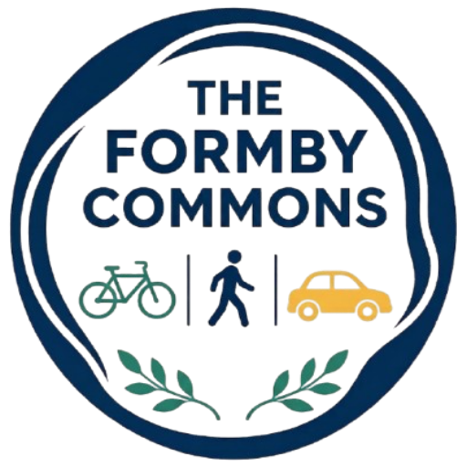

The Formby Commons
Making our public streets and spaces more inclusive, safe, and welcoming for everyone.
Welcome
The Formby Commons is an informal grassroots initiative formed by local residents who want to see safer, better-connected, and more inclusive streets and public places across Formby.
Whether walking, wheeling, cycling, driving, or taking public transport, streets are shared public goods. We aim to support constructive dialogue and practical local improvements that work for everyone across every generation.
Core Priorities
- Safe & Accessible Routes: Supporting street designs that protect pedestrians, wheelchair-users, and cyclists near schools, village hubs, and public transport.
- Community Connectivity: Linking residential neighborhoods, schools, shops, train stations, pinewoods, and coastal areas safely.
- Constructive Local Engagement: Bringing people together around clear evidence and shared observations to help inform practical local changes.